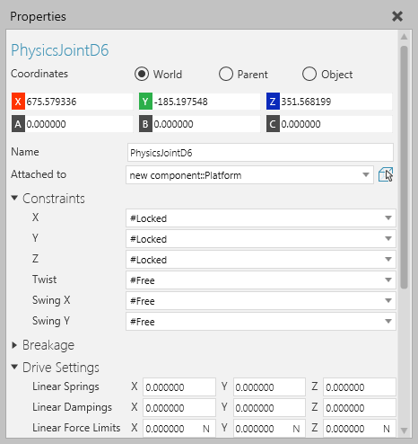

A Physics Joint allows you to configure a D6 joint with multiple degrees of freedom for a component in the 3D world.

| Name | Defines the name of the joint. |
| Attached to | Defines the node that the joint is attached to in the component.
In some cases, this would be the parent of the node containing the joint. For example, a Physics Joint in the node of the second axis for a robot could be attached to the node of the first axis. In other cases, your customization of the joint will determine which node it should attach itself to in a component. |
| Constraints | A set of properties for customizing the joint. That is, constraints for translations and rotations in the axes of a coordinate system.
Each property can be assigned its own constraint. #Free #Limited #Locked |
| Breakage | A set of properties for defining the integrity of the joint. |
| Drive Settings | A set of advanced properties for customizing the physics of the joint and its degrees of freedom. |